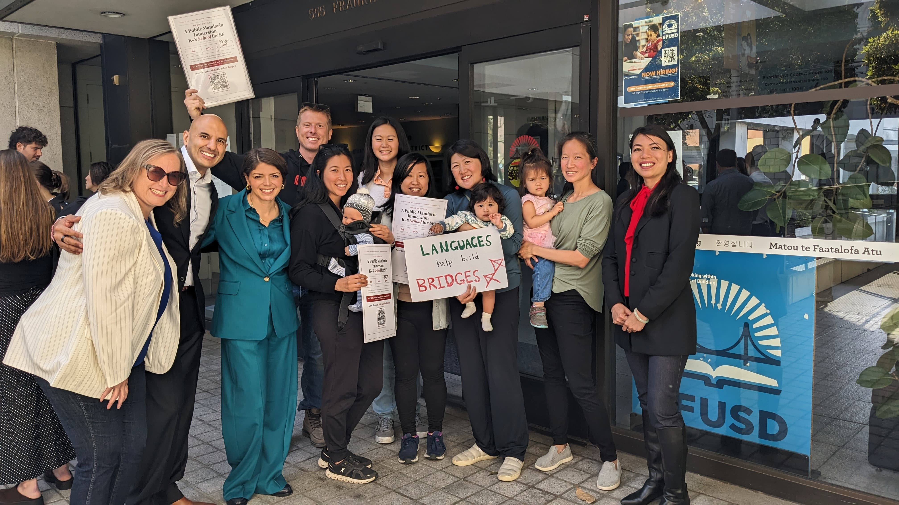

Coverage of our work advocating for the launch of San Francisco’s first Mandarin immersion TK–8 school.

The Mandarin Immersion TK–8 school will launch in fall 2027 at the Mission Education Center, 1670 Noe St. in Noe Valley.
Read the article →SFUSD announced that the Mandarin Immersion TK–8 school will launch in fall 2027 at the Mission Education Center, with a press conference at the district office.
As the district’s site and budget decisions approached, families spoke up, at the June 9 Board meeting and in the press.
Families met with SFUSD leadership in the Sunset, in person and online, to hear the district’s plan for the school.
An anonymous donor’s gift to SFUSD’s nonprofit made the new school possible.
Reporters and editors can reach us at info@sfmandarinschool.org.